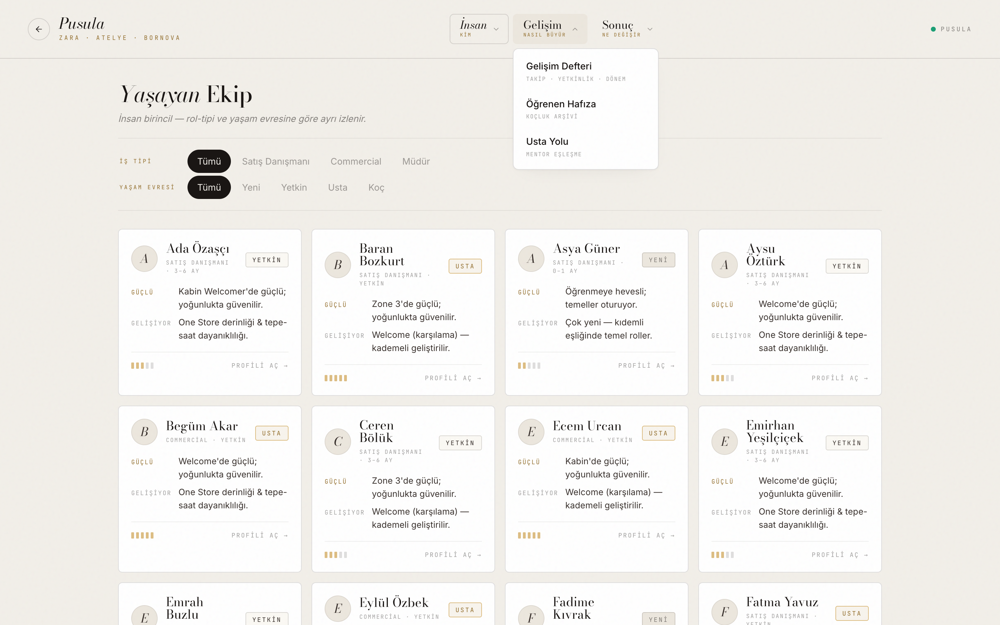
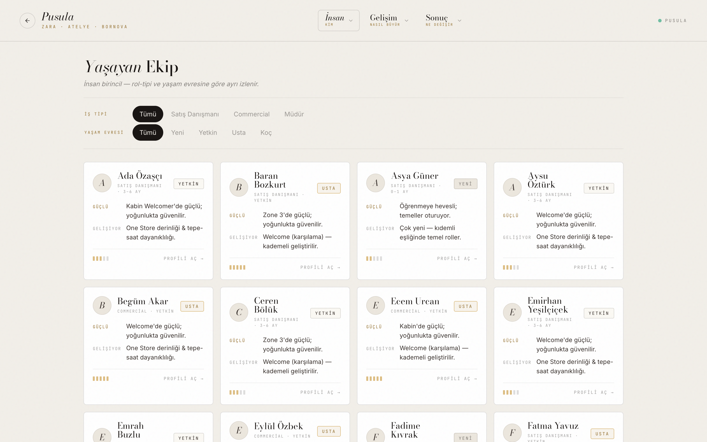
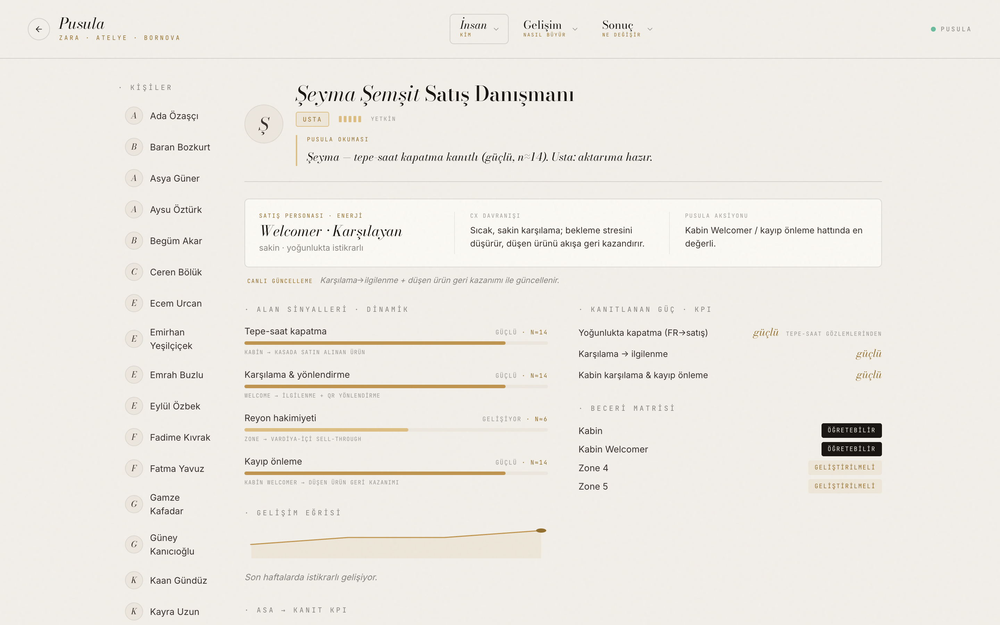
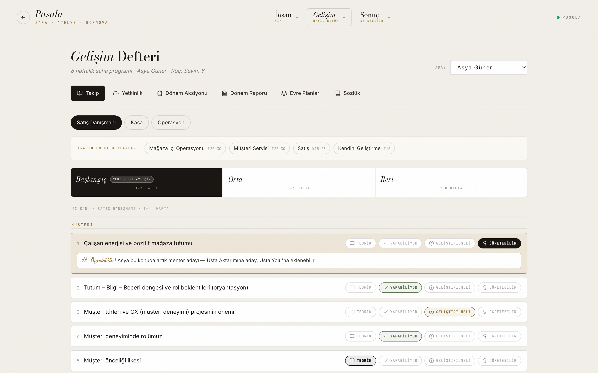
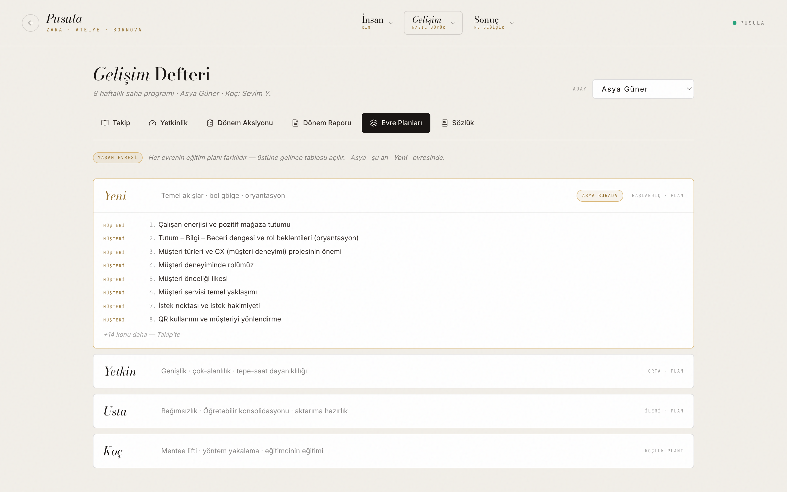
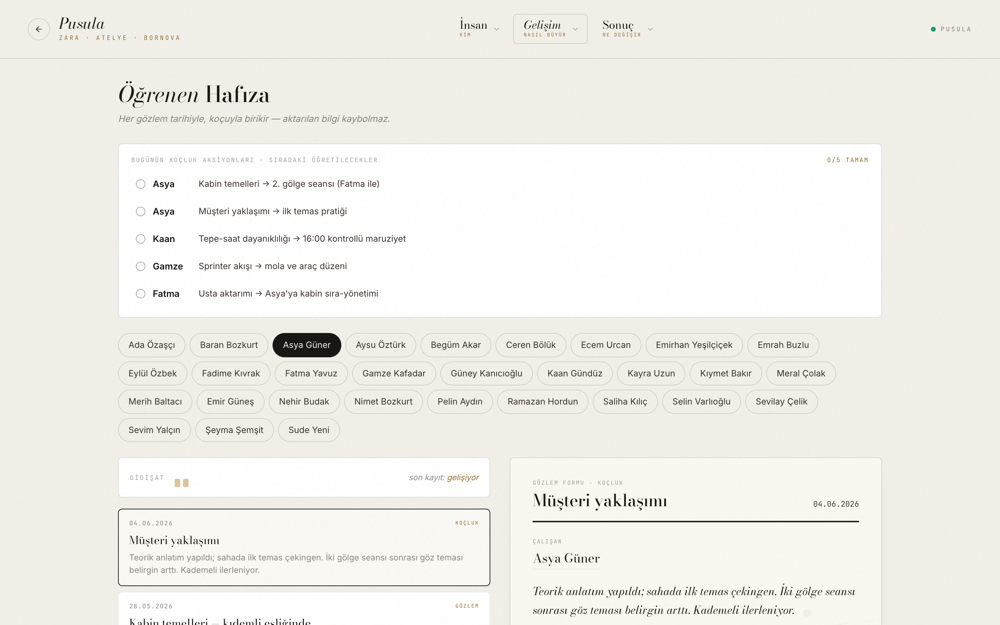
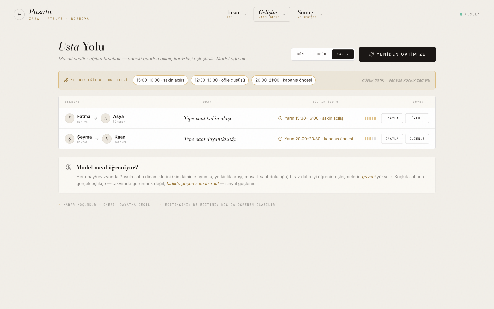
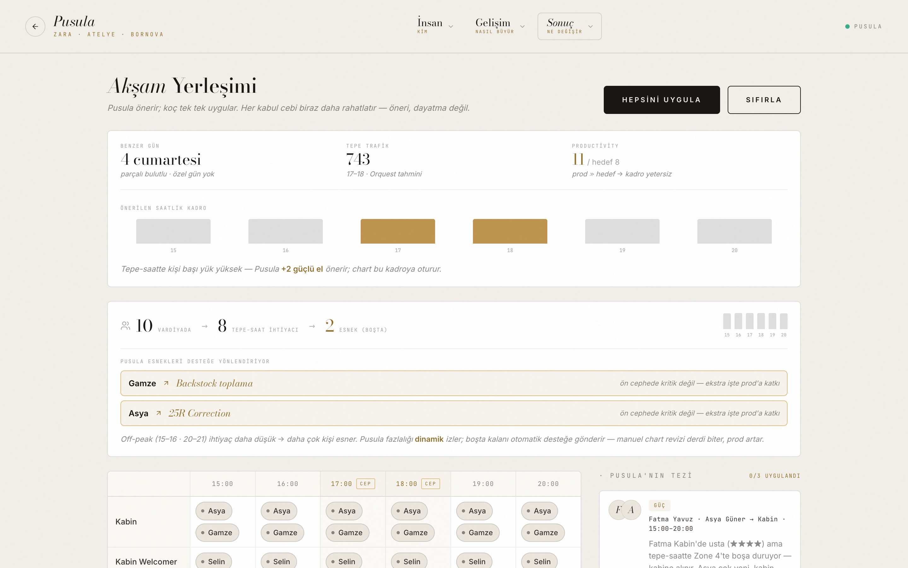
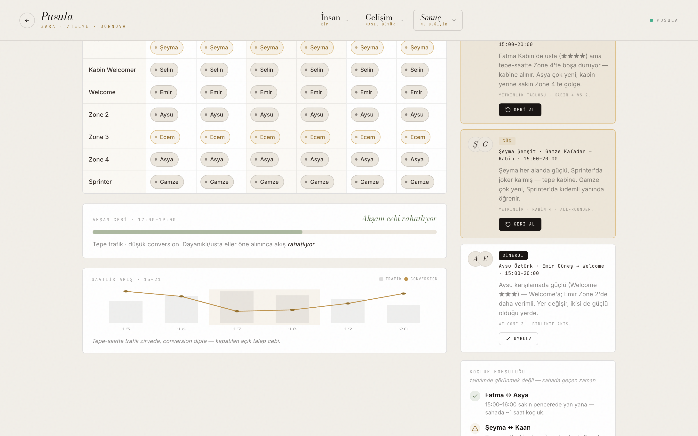

| Veri kaynağı | Nereye gelir | Ne canlanır |
|---|---|---|
| Orquest — saatlik trafik tahmini | Yerleştirme | Benzer-gün öğrenmesi + saatlik gerekli kadro hesabı. |
| Productivity (satış / işçilik-saat) | Yerleştirme | Prod sapması → over/understaffing → surplus ya da "güçlü el lazım". |
| KPI (Export.xlsx: conversion·UPT·ATV) | Profil · Yerleştirme | Akşam cebi göstergesi + ASA→KPI köprüsü; persona güncellenir. |
| Yetkinlik matrisi (Orquest aptitude) | Profil · Chart | Day-0 prior; yetkinliğe göre yerleşim ve eşleşme. |
| Alan çıktıları (FR→satış, zone, welcome→merma) | Profil | Dinamik alan-spesifik boyut + belirsizlik; yokluk→keşif. |
| Kitapçık işaretleri + koç notları | Defter · Hafıza · Müfredat | Öğrenme pattern'i + plan revizyon önerisi. |
| Gerçekleşen sonuç (dönem gelişimi / lift) | Motor | Objective ağırlıkları + profiller kendini günceller. |